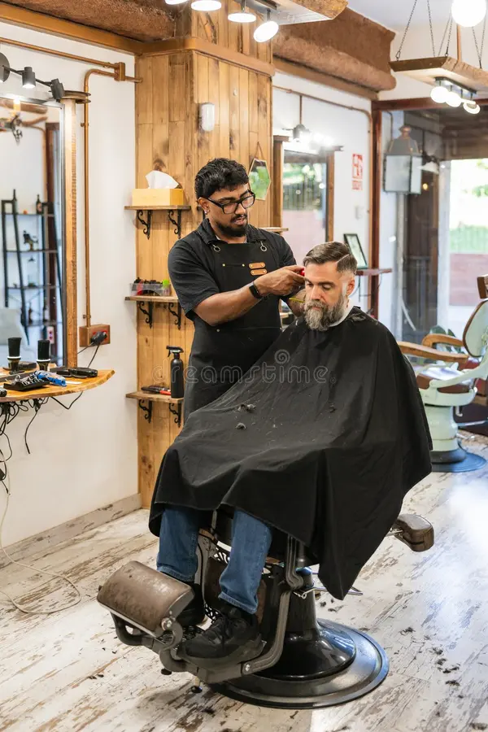

Nuestra Historia de "CUT & FLOW"
Todo comenzó en el corazón de Chancay, a pocos pasos del puerto. Mateo, apasionado por la barbería, se unió a su amigo de la infancia, Lucas, amante de la música y el diseño, para crear un espacio que fusionara el oficio clásico con la cultura urbana.
Con esfuerzo, restauraron muebles a mano y pintaron un mural que une el mar de Chancay con el arte callejero. Bautizaron el local como Cut & Flow: Cut por la precisión en cada corte, y Flow por el ritmo y la energía del lugar.
Hoy, Cut & Flow es más que una barbería; es el punto de encuentro donde cada cliente renueva su estilo y sale con la confianza al máximo.
